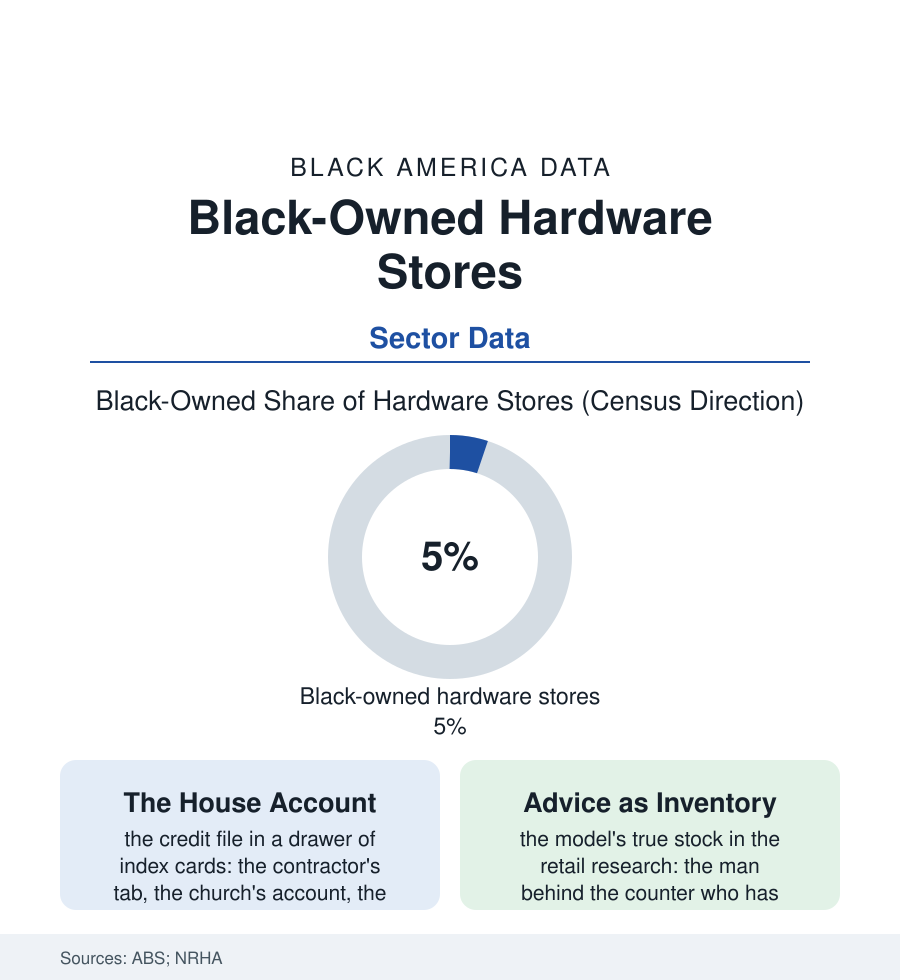

Black Business
The Hardware Store: Nails, Knowledge, and the Big Box's Shadow
The neighborhood hardware store was the tradesman's bank, school, and supply house in one aisle — and the Black-owned store carried the contractors the big chains wouldn't credit. The hardware file.

Before the home center, there was the hardware store: narrow aisles, wooden drawers, a bell over the door — and behind the counter, in the Black neighborhoods of this atlas, a proprietor who extended the credit, taught the repair, and supplied the trades that built the community's houses. The big box was supposed to have ended him. The file is more interesting than the obituary. This article reads the hardware file. The bell over the door was its quarterly report, every single working day.
The Store That Knew Everything
The historic store's functions ran well past retail in the community's accounting: the house account (the contractor's tab carried across the job's payment cycle, the church's line, the homeowner's emergency line — the credit file administered by a man who knew whose word was good because he had buried their fathers), the knowledge counter (the repair diagnosed from a broken part carried in a paper bag — the store as the trades' night school, its proprietor the master of a thousand fixes), and the supply house of the Black building trades (the contractors of the construction file, frozen out of the distributors' credit in the Jim Crow decades, built the neighborhoods on the hardware store's terms — the store's survival and the trades' survival one ledger). The ownership structures tell the adaptation story in the industry data: the independent's surrender-or-join decision before the co-ops — the Ace and True Value banners over the same families' doors, the buying group's volume answering the chain's, the Black proprietor's store flying the national flag and keeping the house accounts in the drawer anyway. The big-box era's mortality in the retail data is real (the sector's firm count halved across the decades of the home center's spread), and the Black store's rows carry the era's standard multiplier: the neighborhoods' own depopulation files, the credit crunch's terms, the heirs' property rows of the store building itself — the survivors in the trade press's profiles distinguished by the same features as the grocery file's: the owned building, the niche the box cannot serve (the key machine, the screen repair, the pipe cut to length, the advice), the third generation's choice to stay.
The Counter's Second Century
The modern store's data hold a genuine revival chapter, and it runs through the trades' boom: the contractor economy's professionalization (the Black GC firms and trades businesses of the business file buying at the counter that raised their grandfathers), the DIY era's gender-and-generation turnover (the pandemic's project boom sending the neighborhood's new homeowners to the counter for the lesson with the lumber — the store's knowledge stock appreciating in the data of its receipts), the e-commerce accommodation (the co-op's ship-to-store plumbing the store into the platform economy on survivable terms), and the disaster file's standing role (the hardware store as the storm's first responder — the generator, the plywood, the chainsaw chain, the line out the door at the hurricane's approach, the proprietor extending, in the documented cases across this atlas's storm cities, the house account to the whole drowning neighborhood at once). The census counts the hardware codes' Black share in the mid single digits — a few hundred stores, most of them small. The trade's own census is kept in the contractors' memories: the store that carried the job, the counter that taught the trade, the account that was settled, in the end, always — because the man behind the counter knew it would be. The file submits that a business whose credit model is knowledge of the customer's grandfather has information no bureau can sell, and that the market, having spent thirty years pricing that information at zero, is mispricing the last stores standing.
Reading the Hardware Data
The hardware file is the business section in a paper bag of broken parts: credit, knowledge, and supply, carried by one counter. The census counts the stores. The contractors — whose firms exist because the account did — count the institution, and pay their respects in purchases, weekly. Ask any of them what the tab meant. The answer is a business school, a bank, and a biography, in one sentence.
More in Black Business
Black-Owned Businesses: Counts, Receipts, and the Representation Gap
About 161,000 Black-owned employer firms and three million solo ventures: how the Census Bureau counts Black business ownership, where firms concentrate, and the gap between population share and business share.
Black Median Net Worth: The Wealth Gap in Federal Reserve Data
The Federal Reserve puts Black median family net worth at $44,900, against $285,000 for White families — about 16 cents on the dollar. The widest gap in economic data.
Black Buying Power: The $1.8 Trillion Consumer Economy
Black buying power is estimated at about $1.8 trillion — larger than the economy of most nations. What the figure measures, who produces it, and what it buys.
Source: U.S. Census Bureau Annual Business Survey; National Retail Hardware Association data; Ace and True Value cooperative records; small-retail research.